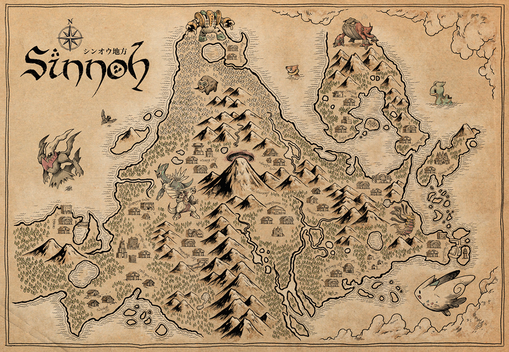
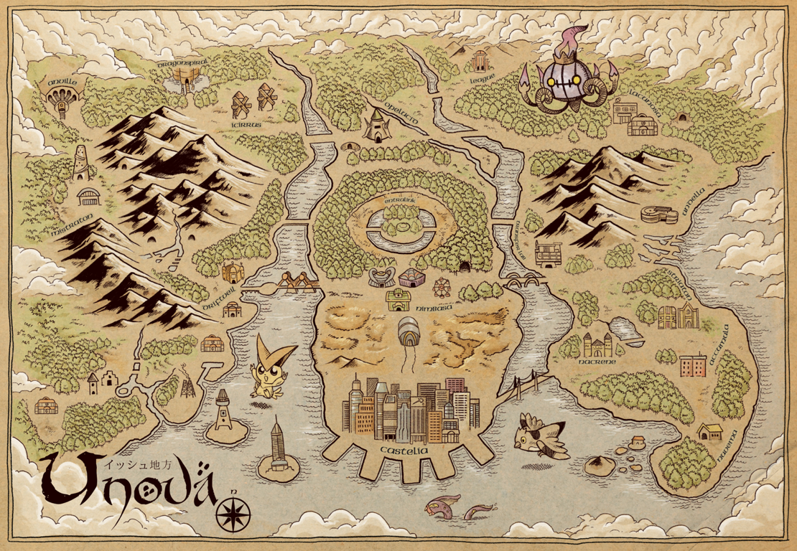
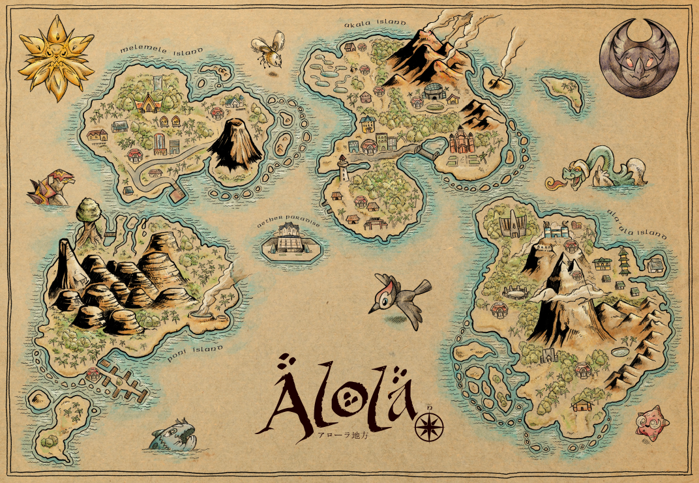
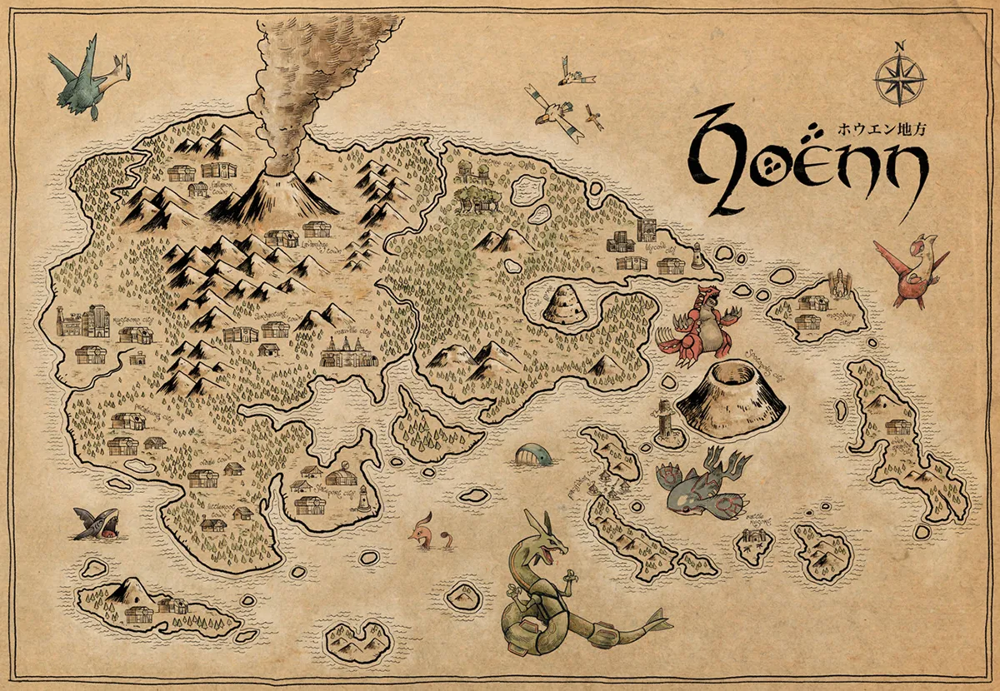
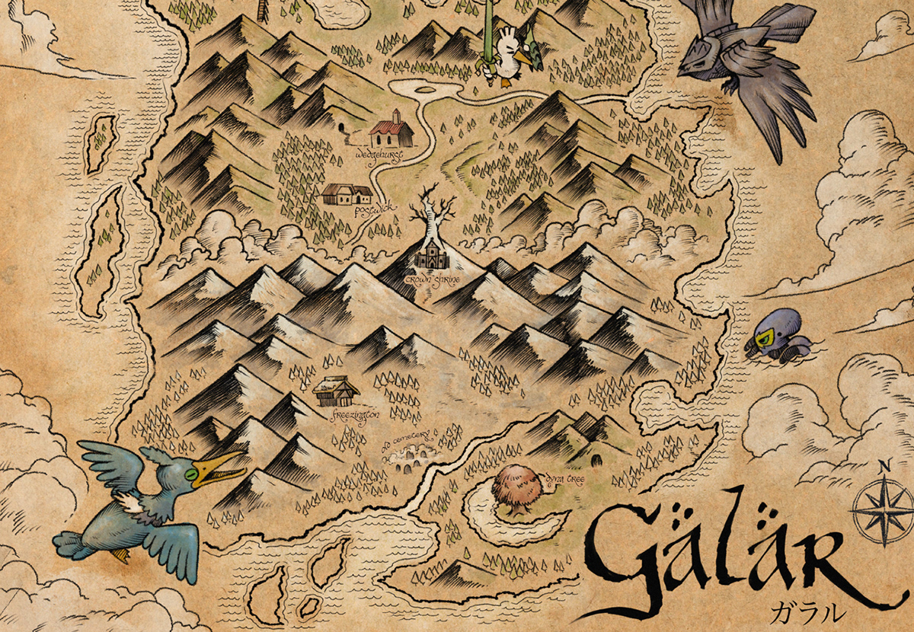

Aqui encontraras todas las ubicaciones, hasta 8va Gen, de Horsea y Seadra.
En los juegos originales de Kanto (Pokémon Rojo, Azul y Amarillo), Horsea es un Pokémon común en las áreas acuáticas de las Rutas 19, 20 y 21, así como en las Islas Espuma. Seadra, su evolución al nivel 32, también aparece en estado salvaje, específicamente en la Ruta 23 en Pokémon Azul.
En Pokémon Oro, Plata y Cristal, Horsea puede ser encontrado en las aguas que rodean la Ruta 41 y en la misteriosa Cueva de los Remolinos. Al evolucionar al nivel 32, Seadra también puede encontrarse en algunas áreas acuáticas de Johto.
En Pokémon Rubí, Zafiro y Esmeralda, Horsea habita en las profundas corrientes de las Rutas 132, 133 y 134. Usando la Súper Caña, los entrenadores pueden pescar tanto a Horsea como a su evolución, Seadra, en estas mismas rutas.
En Pokémon Diamante, Perla y Platino, los jugadores pueden encontrar a Horsea en la Ruta 226 y en la Zona de Combate mediante pesca con la Súper Caña. Al evolucionar, Seadra también está presente en estas áreas.
En Pokémon Negro 2 y Blanco 2, Horsea puede ser hallado en las aguas de las Rutas 4 y 17 utilizando la caña. Seadra aparece en las mismas áreas una vez que ha evolucionado.
En Pokémon X y Y, los entrenadores pueden encontrar a Horsea en las Rutas 12 y 22, nuevamente usando la Súper Caña. Su evolución, Seadra, habita en las mismas zonas.
En Pokémon Sol, Luna, Ultrasol y Ultraluna, Horsea habita en las aguas cercanas a la Isla Exeggutor y la Ruta 15, accesibles con la Súper Caña. Al evolucionar, Seadra también se puede encontrar en estas áreas.
En la región de Galar (Pokémon Espada y Escudo), Horsea aparece en el Lago del Enfado, una parte del Área Silvestre, cuando el clima es tormentoso. Su evolución, Seadra, también puede encontrarse en estas aguas.